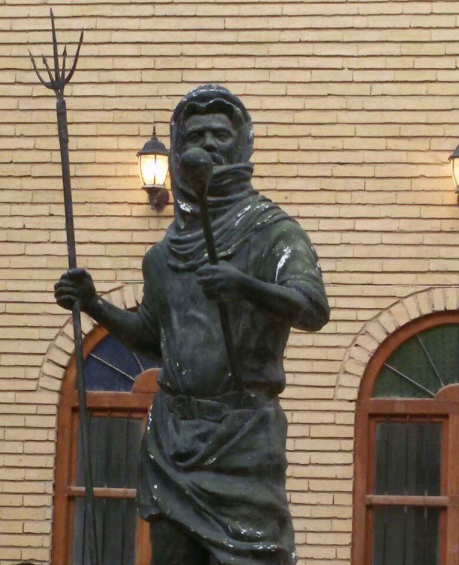
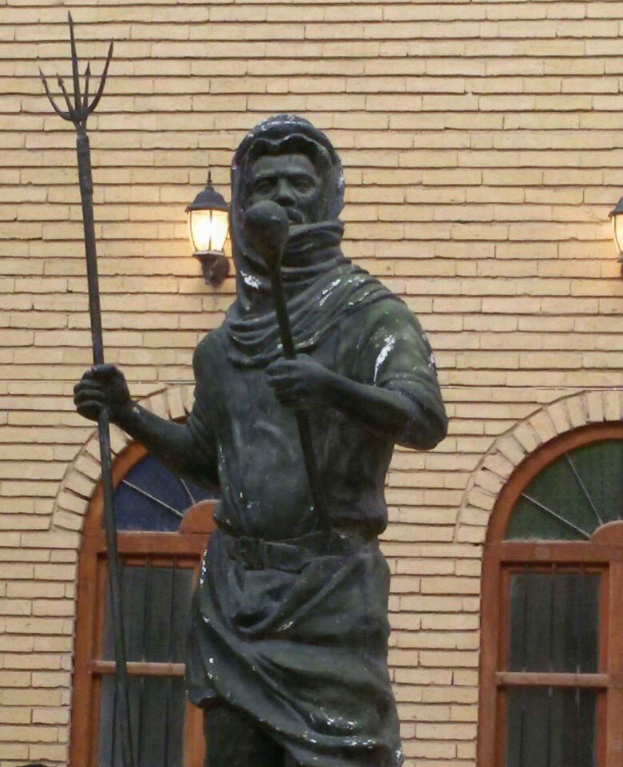

سلاح الفالة هو أداة قتالية شعبية استخدمها العراقيون في مواجهة قوى الاحتلال، وهو وإن بدا بسيطًا في شكله المكون من نصل
معدني مثبت على عصا طويلة، إلا أنه يحمل في طياته رمز المقاومة والتضحية والإصرار على الحرية، فهو شاهد على قدرة الشعب،
رغم تواضع الموارد، على رفض الظلم والدفاع عن أرضه وكرامته، ويعبر عن روح الصمود التي تميّز بها أبناء العراق عبر حقب تاريخية
متعاقبة، حيث تغدو الفالة صورة من صور الشجاعة الشعبية التي وضعت المصير الوطني فوق كل اعتبار